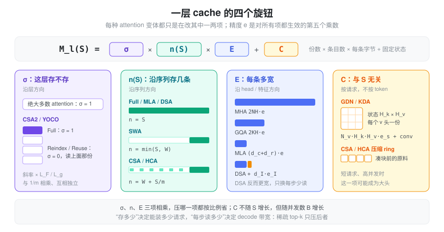
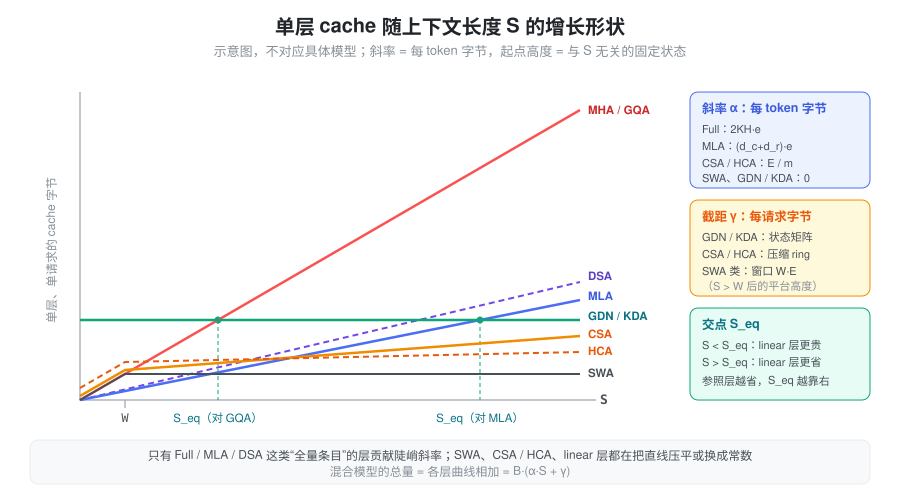

问题：KV cache 不再是一个简单的乘法
对标准的 MHA / GQA，KV cache 的大小就是一串乘法：
M = B \cdot L \cdot S \cdot 2KH \cdot e
每个请求、每一层、每个历史 token，都留下 K 个头的 K 和 V。这个公式里每一项都是线性的，所以过去比较两个模型的 KV 开销，只需要比较 2KH 这一个数。
近几年的 attention 变体各自攻击这个乘积里的不同因子，有的还直接改变了它对 S 的依赖形状：
- MLA 改的是每条有多宽，DSA 在它旁边又多存了一份；
- SWA 让 S 截断在窗口 W，CSA / HCA 让 S 除以压缩率 m；
- CSA2 让一部分层干脆不存；
- GDN / KDA 把整个与 S 相关的项换成一个常数。
一个混合模型往往同时用了其中好几种，“每 token 多少字节”这个问题本身就不再有唯一答案——有的部分按 token 增长，有的部分封顶，有的部分按请求固定。本篇不对应具体模型，而是建立一个统一的记账方式，用符号推出每类 attention 的总 cache 大小，再看它们分别动了哪一项。
符号
沿用 Attention 计算量 的记号，并补充本篇用到的量：
| 符号 | 含义 |
|---|---|
| B | 并发请求数（batch） |
| S | 每个请求当前的上下文长度（即 kv length） |
| L | 层数；L_x 表示 x 类层的层数 |
| N,\ K,\ G | query 头数、KV 头数、每组 query 头数（N = KG） |
| H | head dim |
| e | KV 每个元素的字节数（BF16 为 2，FP8 为 1） |
| e_s | 递推状态每个元素的字节数（通常 FP32，为 4） |
| d_c,\ d_r | MLA 的 latent 维度、解耦 RoPE 维度 |
| d_I | indexer key 的维度 |
| d_{kv} | 压缩类 attention 一条 KV 条目的宽度（K、V 共用一个向量） |
| W | 滑动窗口长度 |
| m | 序列方向的压缩率：每 m 个 token 产生一条压缩 KV |
| k_{\text{top}} | 稀疏 attention 每个 query 选中的条目数 |
| N_{qk},\ N_v,\ H_k,\ H_v | linear attention 的 q/k 头数、v 头数、key 维度、value 维度 |
| w | short conv 的卷积核长度 |
为简洁起见，下文统一用元素个数乘 e 表示字节数；量化 scale 这类小开销只在需要时单列。
抽象：一层 = 份数 × 条目数 × 条目宽度 + 固定状态
把每一层的存储拆成两部分：一部分随上下文增长，一部分按请求固定。
\boxed{\; M_l(S) \;=\; \underbrace{\sigma_l}_{\text{份数}} \cdot \underbrace{n_l(S)}_{\text{条目数}} \cdot \underbrace{E_l}_{\text{每条字节}} \;+\; \underbrace{C_l}_{\text{固定状态}}, \qquad M_{\text{total}} = B \sum_{l=1}^{L} M_l(S) \;}
- E_l：每条 KV 多宽。MHA 是 2NH\cdot e，GQA 是 2KH\cdot e，MLA 是 (d_c + d_r)\cdot e。
- n_l(S)：沿序列存多少条。只有三种形状：全量 S、窗口 \min(S, W)、压缩 \lfloor S/m \rfloor，以及它们的和。
- \sigma_l：这一层是否持有自己的一份。绝大多数 attention 里恒为 1；跨层共享 cache 的设计（CSA2、YOCO）让大部分层取 0，转而读别的层。
- C_l：与 S 无关的每请求状态。linear attention 的递推状态、压缩 attention 里还没凑满一块的”原料”都属于这一项。
于是每种 attention 都可以归结为”它改变了哪个旋钮”：

精度 e 是正交于这四个旋钮的第五个乘数：FP8 / FP4 KV 对上面每一项都同样有效，所以下文推导时把它当作常数带着走。
还有一个需要先分清的概念：存多少和每步读多少是两件事。decode 每一步需要从显存读出的条目数记为 r_l(S)，它决定 decode 的带宽开销；n_l(S) 决定能装多少请求。dense attention 里两者相等，稀疏 attention（DSA、CSA 的 top-k）只压低了 r_l，并不改变 n_l。下文每种 attention 都会把两者分开写。
基线：MHA / GQA / MQA
每层每 token 存 K 个头的 K 和 V，条目数是全量 S：
E = 2KH \cdot e, \qquad n(S) = S, \qquad M_{\text{layer}} = S \cdot 2KH \cdot e, \qquad r(S) = S
MHA、GQA、MQA 只是 K 的三个取值：K = N、1 < K < N、K = 1。相对 MHA 的压缩比就是 K/N = 1/G。
TP 按 KV 头切分，每卡持有 \max(1, K/\text{TP}) 个头；TP 超过 K 之后 KV 被复制，每卡开销不再下降（详见 常驻显存）。
MLA：缩小条目宽度
MLA 不存每个头的 K、V，只存一个可以还原所有头的低秩 latent c_{KV}，外加一段所有头共享的 RoPE key（原理见 MLA）：
E = (d_c + d_r) \cdot e, \qquad n(S) = S, \qquad M_{\text{layer}} = S \cdot (d_c + d_r) \cdot e
两个有用的换算：
- 相对 MHA：压缩比为 \dfrac{d_c + d_r}{2NH}。
- 等效 KV 头数：令 2K_{\text{eq}} H = d_c + d_r，得 K_{\text{eq}} = \dfrac{d_c + d_r}{2H}。也就是说，MLA 的 cache 大小相当于一个只有 K_{\text{eq}} 个 KV 头的 GQA，但每个 query 头看到的 K、V 仍各不相同。
latent 没有头维度，所以 attention TP 不能再切它：TP 组里每张卡都存一整份。比较 MLA 与 GQA 的显存效率时，要用每卡的 \max(1, K/\text{TP})\cdot 2H 去和 d_c + d_r 比，而不是用全局的 2KH。
低精度时，rope 段通常保留高精度，nope 段按块量化。设量化块大小为 g，每个 scale 占 e_{\text{sc}} 字节：
E_{\text{fp8}} = d_c \cdot 1 + d_r \cdot 2 + \frac{d_c}{g}\, e_{\text{sc}}
DSA：多存一份 indexer key，换每步少读
DSA 在 MLA 的基础上增加了一个 Lightning Indexer：用一组很窄的 key 给所有历史 token 打分，只对 top-k_{\text{top}} 做真正的 attention（见 DSA）。哪个 token 会被选中事先不知道，所以主 cache 一条都不能少，indexer key 也要为每个 token 存一份：
E = \underbrace{(d_c + d_r)\, e}_{\text{主 cache}} + \underbrace{d_I\, e_I}_{\text{indexer key}}, \qquad n(S) = S
其中 e_I 是 indexer key 的元素字节数（通常 FP8，另加少量 scale）。存储上 DSA 比 MLA 更大，增量比例是 \dfrac{d_I\, e_I}{(d_c + d_r)\, e}。
变的是每步读的量。decode 一步需要读：
r(S) = \underbrace{S \cdot d_I\, e_I}_{\text{indexer 扫全量}} + \underbrace{\min(S, k_{\text{top}}) \cdot (d_c + d_r)\, e}_{\text{主 cache 只读选中的}}
当 S \gg k_{\text{top}} 时，带宽的斜率从 (d_c + d_r)\,e 降到 d_I\, e_I。这个”存得多、读得少”的不对称，正是 HiSparse 这类方案的出发点：既然每步只读 k_{\text{top}} 条主 cache，完整的主 cache 可以放到 host 内存，显存里只留一个工作集，设备侧的主 cache 从 S 条降到约 S/\rho 条（\rho 为 host 与 device 的容量比）。
SWA：把条目数截断在窗口
SWA 层的每个 query 只看最近 W 个 token，窗口外的 KV 再也不会被读到（见 SWA）：
n(S) = \min(S, W), \qquad M_{\text{layer}} = \min(S, W) \cdot E, \qquad r(S) = \min(S, W)
E 仍然由这一层自己的头结构决定（GQA 的 2KH\,e 或 MLA 的 (d_c+d_r)\,e），SWA 只动条目数。单独一层 SWA 的 cache 是常数；有意义的是它和 full 层混合后的总量：
M_{\text{total}} = B\Big[\,S \cdot L_{\text{full}} E_{\text{full}} \;+\; \min(S, W) \cdot L_{\text{swa}} E_{\text{swa}}\,\Big]
S \gg W 时，第二项可以忽略，每 token 的增长斜率只剩 full 层的 L_{\text{full}} E_{\text{full}}。所以 SWA 模型的长上下文 KV 开销几乎完全由 full 层的比例决定，窗口大小只影响一个常数。
这是理论下界。推理引擎为了让 prefix cache 也能复用 SWA 层的 KV，通常不会把 SWA 池开到恰好 B \cdot W，而是按 full 池的一个比例 r 分配，实际记账变成 L_{\text{full}} E_{\text{full}} + r \cdot L_{\text{swa}} E_{\text{swa}} 每 token——SWA 的成本被打折，而不是清零。
CSA / HCA：沿序列方向压缩
CSA 和 HCA 每 m 个 token 压成一条压缩 KV，近处再用一个 SWA 窗口看原文（见 CSA HCA）。一层的存储分三块：
- SWA 原文：\min(S, W) 条，每条 E = d_{kv}\, e；
- 压缩 KV：\lfloor S/m \rfloor 条，同样每条 d_{kv}\, e；
- 压缩状态（ring）：凑满一块之前的”原料” (C, Z)，与 S 无关。
两者的区别在于压缩率、是否重叠、是否带 indexer：
| CSA（小 m，重叠，带 indexer） | HCA（大 m，不重叠，无 indexer） | |
|---|---|---|
| 压缩 KV | \lfloor S/m \rfloor \cdot d_{kv}\, e | \lfloor S/m \rfloor \cdot d_{kv}\, e |
| indexer key | \lfloor S/m \rfloor \cdot d_I\, e_I | 无 |
| SWA 原文 | \min(S, W) \cdot d_{kv}\, e | \min(S, W) \cdot d_{kv}\, e |
| 压缩状态 C | 2m 槽 × 4 d_{kv}\, e_s，另有 indexer 的 2m \times 4 d_I\, e_s | m 槽 × 2 d_{kv}\, e_s |
| 每步读 r(S) | \min(S,W) + \min(k_{\text{top}}, S/m) 条主 KV，外加扫 S/m 条 indexer key | \min(S,W) + S/m 条 |
压缩状态的形状来自压缩算子本身：重叠时每个 token 投影出 (C^a, C^b, Z^a, Z^b) 四份 d_{kv} 维向量，并且要回看上一块，所以是 2m 槽、每槽 4d_{kv}；不重叠时只有 (C, Z) 两份、只需本块的 m 槽。状态通常用 FP32 存，单槽比一条成品 KV 宽得多，但槽数固定。
S \gg W 时，每层每 token 的增长斜率是：
\alpha_{\text{CSA}} = \frac{d_{kv}\, e + d_I\, e_I}{m_{\text{CSA}}}, \qquad \alpha_{\text{HCA}} = \frac{d_{kv}\, e}{m_{\text{HCA}}}
和 DSA 对照看最清楚：DSA 的稀疏只压了 r(S)，CSA 的压缩先把 n(S) 除以 m，再用 top-k 压 r(S)。前者”省算不省存”，后者两样都省。HCA 的 m 大到 S/m 已经和 k_{\text{top}} 同一个量级，所以干脆全读，不需要 indexer。
HCA 的固定状态 m \cdot 2d_{kv}\, e_s 值得单独注意：它与 S 无关，但正比于并发数 B。长上下文时它只是零头；短请求、高并发时，它反而可能比压缩 KV 本身还大。
CSA2：沿层方向共享
CSA2 不再让每层都持有自己的一份压缩 cache：只有 Full 层产出 main KV 和 indexer key，Reindex 层和 Reuse 层都读最近一个 Full 层的那一份（见 CSA2）。这正是公式里的 \sigma_l：
\sigma_l = \begin{cases} 1, & l \in \text{Full} \\ 0, & l \in \text{Reindex} \cup \text{Reuse} \end{cases}
SWA 原文仍然每层各一份，于是：
M_{\text{total}} = B\Big[\,\underbrace{L \cdot \min(S, W) \cdot d_{kv}\, e}_{\text{每层自己的 SWA}} \;+\; \underbrace{\sum_{l \in \text{Full}} \left\lfloor \frac{S}{m_l} \right\rfloor (d_{kv}\, e + d_I\, e_I)}_{\text{只有 Full 层存}} \;+\; \sum_{l \in \text{Full},\, m_l > 1} C_l \,\Big]
设全局 attention 层共 L_g 层，其中 Full 层 L_F 层。层共享相当于把压缩 KV 的斜率乘上 L_F / L_g；它与序列方向的 1/m 相乘，彼此独立。另外两点：
- indexer key 由 main KV 投影得到，但仍按条目存一份，随 main KV 一起共享，所以和 main KV 共用同一个 \sigma_l；
- m = 1 时没有压缩，也就没有 ring，C_l = 0；m > 1 时 ring 不重叠，只需 m 槽。
层次化 indexer 不改变存储，只改变 indexer 的读量：Full 层扫全部 S/m 条 indexer key，Reindex 层只在一个固定大小 P 的候选池里打分，Reuse 层不读。每层每步的 indexer 读量从”每层 S/m“变成”每组一次 S/m，其余 P 或 0”。
YOCO 是同一个旋钮的另一种用法：后半网络全部读前半产出的一份 KV，等价于后半各层 \sigma_l = 0。
GDN / KDA：把随 S 增长的项换成常数
linear attention 层不存任何按 token 的 KV，而是把整段历史压缩进一个 H_k \times H_v 的状态矩阵，每步原地更新（见 Linear Attention）。对这类层，n(S) = 0，只剩固定项 C。它由两份状态组成：
- 递推状态 S_t：每个 v 头一个 H_k \times H_v 矩阵；
- conv 状态：q、k、v 进入 delta rule 前有一个核长 w 的因果卷积，要保留最近 w-1 步的输入。
C_{\text{GDN}} = \underbrace{N_v\, H_k\, H_v \cdot e_s}_{\text{递推状态}} \;+\; \underbrace{(w - 1)\,(N_v H_v + 2 N_{qk} H_k) \cdot e_{\text{conv}}}_{\text{conv 状态}}
KDA 的 q、k、v 头数相同（N_{qk} = N_v = N），且 H_k = H_v = H：
C_{\text{KDA}} = N H^2 \cdot e_s \;+\; 3(w - 1)\, N H \cdot e_{\text{conv}}
两点值得注意：
- KDA 的逐通道遗忘门不增加状态。门 \alpha_t \in (0,1]^{H_k} 是每个 token 现算现用的，用完即弃；状态矩阵的形状和 GDN 一样。细粒度门控的代价落在计算上，不在显存上。
- 递推状态远大于 conv 状态。前者是 H^2 量级，后者只有 3(w-1)H；而且递推状态要反复读写、误差会累积，默认用 FP32（e_s = 4），这让它又贵了一倍。
等效 token 数：从哪个长度开始划算
固定状态和按 token 增长的 KV 不能直接比，但可以换算：一个 linear 层的状态，相当于多少个 token 的 full attention KV？以一个同头数、同 head dim 的 GQA 层为参照（N_v = N,\ H_k = H_v = H，忽略 conv）：
S_{\text{eq}} = \frac{N H^2\, e_s}{2 K H\, e} = \frac{G H}{2} \cdot \frac{e_s}{e}
常见的 e_s = 4（FP32 状态）、e = 2（BF16 KV）时，S_{\text{eq}} = G H。意思是：上下文短于 GH 个 token 时，linear 层反而比一个 GQA 层更占显存；超过之后，GQA 层的 KV 继续线性增长，linear 层保持不变。以 MLA 层为参照时，分母换成 (d_c + d_r)\, e，S_{\text{eq}} 会更大，因为 MLA 本身已经很省。
这也解释了为什么 linear attention 总是和少量 full attention 层混合：纯 linear 模型的召回能力不足；混合之后，长上下文的增长斜率由少数 full 层决定，linear 层只贡献一个按请求计的固定开销。
状态不能切开：prefix cache 与投机解码的额外份数
KV cache 可以按 token 截断复用，状态却只对应”前缀长度恰好为 t“这一个位置。所以凡是需要回到某个中间位置的特性，都要额外存状态的副本：
- prefix cache：每个可命中的前缀位置都要存一份完整的 C。按间隔 \Delta 打快照时，一条长度为 P 的缓存前缀最多要 \lfloor P/\Delta \rfloor 份；
- 投机解码：verify d 个 draft token 时，每个 draft 位置都要一份中间状态，直到确定接受长度，临时开销约 d \cdot C。
对 linear 层来说，这些副本才是”随长度增长”的那部分，只是增长的单位从 token 变成了快照。
汇总：一张表看每种 attention 动了哪一项
单层、单请求，S \gg W 时：
| 类型 | 份数 \sigma | 条目数 n(S) | 每条宽度 E | 固定状态 C | 每步读 r(S)（条） |
|---|---|---|---|---|---|
| MHA / GQA | 1 | S | 2KH\, e | 0 | S |
| MLA | 1 | S | (d_c + d_r)\, e | 0 | S |
| DSA | 1 | S | (d_c + d_r)\, e + d_I\, e_I | 0 | k_{\text{top}} 主 KV + S indexer |
| SWA | 1 | W | 同本层头结构 | 0 | W |
| CSA | 1 | W + S/m | d_{kv} e；压缩条目另加 d_I e_I | 2m 槽 ring | W + k_{\text{top}} 主 KV + S/m indexer |
| HCA | 1 | W + S/m | d_{kv}\, e | m 槽 ring | W + S/m |
| CSA2 | Full 层 1，其余 0 | W + Full 层 S/m | d_{kv} e + d_I e_I | m > 1 时 m 槽 ring | W + k_{\text{top}} |
| GDN | — | 0 | — | N_v H_k H_v\, e_s + conv | 状态本身 |
| KDA | — | 0 | — | N H^2\, e_s + conv | 状态本身 |
把各层的 M_l(S) 放在同一张坐标图里，形状差别一目了然：

混合模型：一条斜率加一个截距
实际模型几乎都是混合结构，但不管怎么混，只要 S > W，总量都可以整理成一个关于 S 的仿射函数：
M_{\text{total}} = B\,(\alpha\, S + \gamma), \qquad \alpha = \sum_{l} \frac{\sigma_l\, E_l}{m_l}, \qquad \gamma = \sum_{l \in \text{SWA 类}} W\, E_l^{\text{swa}} + \sum_l C_l
其中 full 层取 m_l = 1，linear 层和 SWA 层对 \alpha 没有贡献。
- \alpha 是”每 token 字节”：长上下文的容量由它决定。MLA 压 E，CSA / HCA 加大 m，CSA2 让 \sigma 变成 0，混合 SWA / linear 层则是减少能贡献 \alpha 的层数——本质上都在压这一个数；
- \gamma 是”每请求字节”：SWA 窗口、压缩 ring、linear 状态都在这里。它决定短请求、高并发场景的上限。
给定 KV 预算 M_{\text{budget}}，能同时服务的请求数是
B_{\max} = \frac{M_{\text{budget}}}{\alpha\, S + \gamma}
S 小时分母由 \gamma 主导，S 大时由 \alpha 主导，两者相等的位置 S^{*} = \gamma / \alpha 就是一个模型”从按请求受限转为按 token 受限”的分界。把大量层换成 linear / SWA 会降低 \alpha、抬高 \gamma，S^{*} 随之右移——这类模型的主场在长上下文，短请求上并不占便宜。
在 SGLang 中：\alpha 和 \gamma 分别在哪里算
SGLang 启动时先用剩余显存除以”每 token 字节”解出 token
容量（流程见 常驻显存），上面的 \alpha 就是这里的 cell
size；\gamma
中按请求的部分则先单独扣掉。以下路径相对于
python/sglang/srt/，都在
model_executor/pool_configurator.py 中：
- MHA / GQA / MLA /
DSA：
DefaultPoolConfigurator._compute_cell_size。MLA 分支是calculate_mla_kv_cache_dim × 层数 × 元素字节，没有任何 TP 除数，对应”latent 不可按头切”；DSA 模型再加上_compute_dsa_indexer_cell_size，即 d_I 加每 128 维一个 4 B scale。 - SWA
混合：
HybridSWAPoolConfigurator的 cell 是 E_{\text{full}} L_{\text{full}} + r \cdot E_{\text{swa}} L_{\text{swa}}，也就是前文说的”打折而不清零”。 - CSA / HCA /
CSA2：
DSV4PoolConfigurator._get_bytes_per_full_token对每种压缩率累加_compressed_bytes_per_full_token(ratio) × 层数，其中 ratio 4 是 \tfrac14(主 KV + indexer)，ratio 128 是 \tfrac{1}{128} 主 KV，ratio 1 / 2 是 (主 KV + indexer) ÷ ratio。参与累加的层由collect_sources_by_ratio（mem_cache/deepseek_v4_memory_pool.py）给出：ratio 4 / 128 的层全部计入，ratio 1 / 2 的层只计入 config 中kv_source_layer_ids列出的层——这就是代码里的 \sigma_l。CSA 的 ring 挂在 SWA 页上，被并进 SWA 每槽的字节数；HCA 的 ring 按请求预留，属于 \gamma。 - GDN / KDA：状态形状由
configs/mamba_utils.py的Mamba2StateShape/KimiLinearStateShape给出，每请求字节数是mamba_cache_per_req = (conv 元素数 × conv 字节 + 状态元素数 × 状态字节) × linear 层数，与前面 C_{\text{GDN}}、C_{\text{KDA}} 的公式逐项对应。这部分在解 token 容量之前由MambaPool预留。
小结
KV cache 的总大小可以统一写成”份数 × 条目数 × 条目宽度 + 固定状态”，各种 attention 变体只是在拧不同的旋钮：MLA 缩小条目宽度，DSA 反而多存一份 indexer key、只换来每步少读；SWA 截断条目数，CSA / HCA 把条目数除以压缩率；CSA2 让大部分层不再持有自己的一份；GDN / KDA 则把随 S 增长的项整个换成常数状态。混合之后，总量总能整理成 B(\alpha S + \gamma)：\alpha 是每 token 字节，决定长上下文的容量；\gamma 是每请求字节，决定短请求高并发的上限。比较两个模型的 KV 开销时，要同时看这两个数，以及”存多少”和”每步读多少”的区别，而不是只看一个”每 token 多少 KB”。